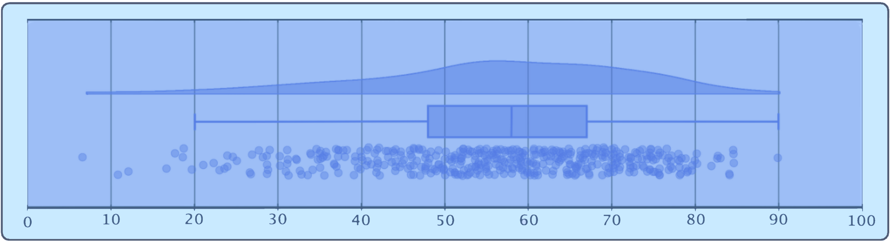

GIST Sarcoma as a model for precision oncology
Gastrointestinal Stromal Tumors: For this rare cancer group, genetic insight helps guide treatment.
Interactive Data Story (Narrative Dashboard), Authored: 2026
Gastrointestinal stromal tumors are a class of sarcomas with a shared mesenchymal origin,1,2 most commonly arising from the interstitial cells of Cajal (ICCs), pacemaker cells that help coordinate rhythmic contractions in the gut walls.3-5
Sarcoma represents about 1% of adult cancers.6 While GIST accounts for anywhere from roughly 14% to 20% of soft tissue sarcoma (STS) cases,6,7 it is considered a rare disease, diagnosed in about 10-15 cases per million individuals annually.2-4 Since its classification, greater awareness of what drives GIST formation has opened avenues to more effective treatments and improved its prognosis.3,9 GIST is heterogeneous across genetic subtype, patient age, and site of tumor origin, among several other factors. Disease management is often interdisciplinary and adjusted to reflect this case-by-case diversity.10,11 Genetic subtype is a key focus from diagnosis through treatment, where it predicts initial drug sensitivity and can guide immediate therapeutic course of action.9-13 Variables such as patient age and primary tumor site offer diagnostic clues at presentation, assist in risk stratification, and, alongside an understanding of molecular subtype, contribute to overall clinical strategy.11 Evaluating individual variation is now a cornerstone of successful GIST management,3,8 and this rare cancer stands out as a model of precision medicine in solid tumor treatment.10-14
Molecular subtype informs treatment.2 Identification of the oncogene KIT, followed by PDGFRA, as relevant to GIST formation completely changed how clinicians approach its treatment.1,9,13 Both encode for receptor tyrosine kinases (RTKs), surface proteins which help coordinate signals related to cell proliferation and survival.15 In healthy cells, this signaling is transmitted in response to relevant biological stimuli.16 Activating, or primary, mutations in these genetic drivers elicit ligand- independent activation in the resulting aberrant kinases.15,17 Oncogenesis occurs as these signals then persist in the absence of typical molecular cues, driving the unchecked cell proliferation characteristic of GIST neoplasms. 8,9,18 The first line of treatment for inoperable cases is often an oral RTK inhibitor, such as Imatinib,8 which interacts with some mutant forms of KIT and PDGFRA, slowing cancer progression by dampening abnormal signaling.18-20
Activating mutations in KIT or PDGFRA account for 75%-85% of GISTs,3,4,8,18 yet roughly 20 primary drivers have been identified.21-23 Within the remaining 15%-25% of GISTs, SDH-deficient tumors form a notable subset.8 Succinate dehydrogenase (SDH) loss of function and subsequent succinate accumulation can drive oncogenesis through broad epigenetic remodeling and pseudohypoxia signaling.24 Lastly, SDH-competent, non-KIT/PDGFRA- subtypes may harbor mutations in oncogenes like NF1, BRAF, and RAS, along with NTRK gene fusions.21,25,26 For many rarer variants, treatment options are limited; there is an ongoing search for new interventions.11
Frequencies of the most common GIST primary mutations are shown in Figure 1. Specific activating mutations can appear in “hotspots” within particular regions of a single driver. Mutations in different exons within one affected gene can modify folding and function of the resulting protein in clinically relevant ways. An oral inhibitor may faithfully bind to one aberrant form of an RTK to restrict cancer growth, yet have no effect on a tumor activated by a different driver.26 Imatinib, for example, interacts with key regions of the affected RTK in GISTs with KIT exon 11 and 9 mutations, as well as those with most non-D842V PDGFRA mutations.19 On the other hand, PDGFRA D842V mutations occur directly inside the activation loop, impairing binding,27 and SDH-deficient GISTs lack these aberrant kinases altogether. As a result, D842V mutation-harboring GISTs are usually unresponsive to Imatinib9,26 and SDH deficient GISTS are resistant entirely.24 Even within a group of primary tumors with shared activating mutations in KIT, treatment response varies predictably by affected exon.28 Cases harboring KIT exon 11 mutations usually exhibit more sensitivity to Imatinib, while those with exon 9 mutations are generally less responsive, and a higher dose is often indicated.8,10,29
Mutational testing helps to anticipate variation in treatment response, allowing care teams to select interventions most likely to yield favorable outcomes.20,30
Figure 2. Age at Diagnosis for a GIST Patient Cohort

This raincloud plot shows the age distribution across 469 GIST cases, with a median approaching 60. About 72% of the patients were diagnosed at 50 or older. Data was accessed in 2026 and pulled from a publicly-available clinical dataset published to the cBioPortal for Cancer Genomics website in 2023 (MSK, Clin Cancer Res 2023).
Distributions of molecular subtypes vary by patient age demographic.31 Most older patients have tumors arising from spontaneous mutations in KIT and PDGFRA that develop after decades of life.32,33 In pediatric patients, KIT/PDGFRA mutations make up a minority of incidents; familial variants are instead more common.34 Inherited drivers such as SDHx, NF1, and familial KIT/PDGFRA mutations result in a predisposition to disease that is present from birth, increasing the odds of tumor growth earlier in life.35-37 In this way, age at diagnosis orients diagnostic testing and can streamline treatment selection.25 Even after controlling for its association with driver frequencies, age impacts disease management. Guidelines for surgical resection, long-term monitoring, TKI dosing, and risk-adjusted treatment all vary by age group.38
Figure 3. Anatomy of GIST Primary Tumor Locations
GIST can occur throughout the digestive tract, but originates in certain locations more often.39 Primary site is clinically relevant; it has implications for how a case can be treated, what symptoms may present, and whether metastasis is likely.

Figure 3b. General Primary Site Frequencies
The percentage ranges above are epidemiological estimates. They do not reflect a single clinical data set, but rather, derive from global established trends.
Some GISTs (about 15%-47%) are metastatic upon discovery2, and primary site may be established through structural and molecular evaluation. Identification of primary site for localized GISTs is comparatively more straightforward. A rare minority of cases present as disseminated GIST, wherein a primary site cannot be determined.46 For the majority of cases that can be connected to a single location of origin, tumor site impacts diagnostic workflow and risk stratification. Even after controlling for mitotic rate and tumor size, certain locations are associated with more aggressive disease.31,41 Site of origin corresponds with distinct driver mutation frequencies. For example, gastric GISTs present with KIT exon 11 mutations more often, while KIT exon 9 mutations are primarily found in the small intestine.42,43 Considering this pattern helps steer diagnostic workflow and predict effective treatments.2,42 Evaluating driver mutations and primary site as both independent and connected variables creates a more nuanced picture of GIST.39 Clinical next steps for sites such as the stomach are more established, while protocols for rarer subtypes, like esophageal tumors, are being clarified.44
GIST is recognized as a solid-tumor model for precision oncology. Molecular subtype intersects with other disease variables to guide clinical strategy from diagnosis throughout treatment. Evaluating heterogeneity within this sarcoma class offers a more complete picture of each GIST case and of the disease as a whole.
Gastrointestinal stromal tumors (GIST) present with substantial case-by-case diversity across multiple interrelated factors. Genetic subtype determines which therapies a tumor will most likely respond to at the outset, while age and primary site each offer clues to that subtype and independently shape risk assessment and clinical protocol. Honoring this diversity enables more precise treatment of this rare cancer, and emerging tools like predictive deep learning have the potential to increase that precision by offering a sharper understanding of GIST molecular diversity.
References
1. Kitamura Y. Gastrointestinal stromal tumors: past, present, and future. Journal of Gastroenterology. 2008;43(7):499-508. doi:10.1007/s00535-008-2200-y
2. Cicala CM, Bauer S, Heinrich MC, Serrano C. Gastrointestinal Stromal Tumor: Current Approaches and Future Directions in the Treatment of Advanced Disease. Hematology/Oncology Clinics of North America. 2025;39(4):773-784. doi:10.1016/j.hoc.2025.04.006
3. Burch J, Ahmad I. Gastrointestinal Stromal Cancer. PubMed. 2020. Accessed September 22, 2026. https://www.ncbi.nlm.nih.gov/books/NBK554541/
4. Waidhauser J, Bornemann A, Trepel M, Märkl B. Frequency, localization, and types of gastrointestinal stromal tumor-associated neoplasia. World Journal of Gastroenterology. 2019;25(30):4261-4277. doi:10.3748/wjg.v25.i30.4261
5. López-Pingarrón L, Almeida H, Soria-Aznar M, et al. Interstitial Cells of Cajal and Enteric Nervous System in Gastrointestinal and Neurological Pathology, Relation to Oxidative Stress. Current Issues in Molecular Biology. 2023;45(4):3552-3572. doi:10.3390/cimb45040232
6. Gamboa AC, Gronchi A, Cardona K. Soft‐tissue sarcoma in adults: An update on the current state of histiotype‐specific management in an era of personalized medicine. CA: A Cancer Journal for Clinicians. 2020;70(3):200-229. doi:10.3322/caac.21605
7. von Mehren M, Joensuu H. Gastrointestinal Stromal Tumors. Journal of Clinical Oncology: Official Journal of the American Society of Clinical Oncology. 2018;36(2):136-143. doi:10.1200/JCO.2017.74.9705
8. Song IH, Ahn S, Kim HD, et al. Gastrointestinal Stromal Tumor: History, Molecular Subtypes, and Risk Stratification. J Gastric Cancer. 2026;26(2):202-218. doi:10.5230/jgc.2026.26.e7
9. Szucs Z, Thway K, Fisher C, et al. Molecular subtypes of gastrointestinal stromal tumors and their prognostic and therapeutic implications. Future Oncology. 2017;13(1):93-107. doi:10.2217/fon-2016-0192
10. Ho SYA, Tok AHS, Han HQMK, Samol J, Shelat VG. Why precision oncology works: lessons from gastrointestinal stromal tumours. Explor Target Antitumor Ther. 2026;7:1002378. doi:10.37349/etat.2026.1002378
11. Qasim H, Abu Shugaer M, Awawdeh AN, et al. Gastrointestinal Stromal Tumors: Histopathological Spectrum, Molecular Subtypes, and Implications for Targeted Therapy. Cureus. 2026;18(1):e101180. doi:10.7759/cureus.101180
12. Comandone A, Boglione A. The importance of mutational status in prognosis and therapy of GIST. Recenti Prog Med. 2015;106(1):17-22. doi:10.1701/1740.18950
13. Blay JY, Le Cesne A, Cassier PA, Ray-Coquard IL. Gastrointestinal stromal tumors (GIST): a rare entity, a tumor model for personalized therapy, and yet ten different molecular subtypes. Discovery medicine. 2012;13(72):357-367. PMID: 22642917. https://pubmed.ncbi.nlm.nih.gov/22642917/
14. Florou V, Trent JC, Wilky BA. Precision medicine in gastrointestinal stromal tumors. Discov Med. 2019 Nov-Dec;28(155):267-276. PMID: 32053767. https://pubmed.ncbi.nlm.nih.gov/32053767/
15. Sheikh E, Tran T, Vranic S, Levy A, Bonfil RD. Role and Significance of c-KIT Receptor Tyrosine Kinase in Cancer: A Review. Bosnian Journal of Basic Medical Sciences. 2022;22(5). doi:10.17305/bjbms.2021.7399
16. Jingnuo D, Huachuan Z, Da Z, Zhi D, Yan C, Fazhi Z. Gastrointestinal Stromal Tumors: Molecular Mechanisms of Drug Resistance and Advances in Therapeutic Strategies. J Gastroenterol Hepatol. 2026;41(4):1191-1203. doi:10.1111/jgh.70306
17. Corless CL. Gastrointestinal stromal tumors: what do we know now? Modern Pathology. 2014;27(S1):S1-S16. doi:10.1038/modpathol.2013.173
18. Bauer S, George S, von Mehren M, Heinrich MC. Early and Next-Generation KIT/PDGFRA Kinase Inhibitors and the Future of Treatment for Advanced Gastrointestinal Stromal Tumor. Front Oncol. 2021;11:672500. doi:10.3389/fonc.2021.672500
19. Xiao XH, Zhang QS, Hu JY, Zhang YX, Song H. Tyrosine Kinase Inhibitors for Gastrointestinal Stromal Tumor After Imatinib Resistance. Pharmaceutics. 2025;17(7):923. doi:10.3390/pharmaceutics17070923
20. Lopes LF, Bacchi CE. Imatinib treatment for gastrointestinal stromal tumour (GIST). Journal of Cellular and Molecular Medicine. 2009;14(1-2):42-50. doi:10.1111/j.1582-4934.2009.00983.x
21. Deepak Saravanan, Mohan M. Genetic mutations in the molecular pathogenesis of gastrointestinal stromal tumor. Journal of Clinical and Experimental Gastroenterology. 2022;1(1):37-44. doi:10.46439/gastro.1.008
22. Li K, Cheng H, Li Z, et al. Genetic progression in gastrointestinal stromal tumors: mechanisms and molecular interventions. Oncotarget. 2017;8(36):60589-60604. doi:10.18632/oncotarget.16014
23. Maha Alkhuziem, Burgoyne AM, Fanta PT, Tang CM, Sicklick JK. The Call of “The Wild”-Type GIST: It’s Time for Domestication. Journal of the National Comprehensive Cancer Network. 2017;15(5):551-554. doi:10.6004/jnccn.2017.0057
24. Killian JK, Kim SY, Miettinen M, et al. Succinate Dehydrogenase Mutation Underlies Global Epigenomic Divergence in Gastrointestinal Stromal Tumor. Cancer Discovery. 2013;3(6):648-657. doi:10.1158/2159-8290.CD-13-0092
25. Boikos SA, Pappo AS, Killian JK, et al. Molecular Subtypes of KIT/PDGFRA Wild-Type Gastrointestinal Stromal Tumors: A Report From the National Institutes of Health Gastrointestinal Stromal Tumor Clinic. JAMA oncology. 2016;2(7):922-928. doi:10.1001/jamaoncol.2016.0256
26. Abudurexiti N, Lou Y, Wu M, et al. The Mechanisms of Imatinib Resistance in Gastrointestinal Stromal Tumours: Theoretical Basis and Therapeutic Aspect. J Cell Mol Med. 2025;29(21):e70931. doi:10.1111/jcmm.70931
27. Rizzo A, Pantaleo MA, Astolfi A, Indio V, Nannini M. The Identity of PDGFRA D842V-Mutant Gastrointestinal Stromal Tumors (GIST). Cancers. 2021;13(4):705. doi:10.3390/cancers13040705
28. Heinrich M, Corless CL, Demetri G D, et al. Kinase Mutations and Imatinib Response in Patients With Metastatic Gastrointestinal Stromal Tumor. Journal of Clinical Oncology. 2003;21(23):4342-4349. doi:10.1200/jco.2003.04.190
29. Yim E, An HJ, Cho U, et al. Two different KIT mutations may lead to different responses to imatinib in metastatic gastrointestinal stromal tumor. Korean J Intern Med. 2018;33(2):432-434. doi:10.3904/kjim.2015.295
30. Oppelt PJ, Hirbe AC, Van Tine BA. Gastrointestinal stromal tumors (GISTs): point mutations matter in management, a review. J Gastrointest Oncol. 2017;8(3):466-473. doi:10.21037/jgo.2016.09.15
31. Miettinen M, Lasota J. Gastrointestinal Stromal Tumors: Review on Morphology, Molecular Pathology, Prognosis, and Differential Diagnosis. Archives of Pathology & Laboratory Medicine. 2006;130(10):1466-1478. doi:10.5858/2006-130-1466-gstrom
32. Dudzisz-Śledź M, Klimczak A, Bylina E, Rutkowski P. Treatment of Gastrointestinal Stromal Tumors (GISTs): A Focus on Younger Patients. Cancers (Basel). 2022;14(12):2831. doi:10.3390/cancers14122831
33. IJzerman NS, Drabbe C, den Hollander D, et al. Gastrointestinal Stromal Tumours (GIST) in Young Adult (18-40 Years) Patients: A Report from the Dutch GIST Registry. Cancers (Basel). 2020;12(3):730. doi:10.3390/cancers12030730
34. Quiroz HJ, Willobee BA, Sussman MS, et al. Pediatric gastrointestinal stromal tumors—a review of diagnostic modalities. Translational gastroenterology and hepatology. 2018;3:54-54. doi:10.21037/tgh.2018.07.08
35. Postow MA, Robson ME. Inherited gastrointestinal stromal tumor syndromes: mutations, clinical features, and therapeutic implications. Clin Sarcoma Res. 2012;2(1):16. doi:10.1186/2045-3329-2-16
36. Brodey A, Valentinos Kounnis, Hawkes L, Jones RL, McVeigh TP, Cojocaru E. KIT-Associated Familial GIST Syndrome: Response to Tyrosine Kinase Inhibitors and Implications for Risk Management.The Oncologist. 2022;27(8):615-620. doi:10.1093/oncolo/oyac120
37. Agaram NP, Laquaglia MP, Ustun B, et al. Molecular characterization of pediatric gastrointestinal stromal tumors. Clin Cancer Res. 2008;14(10):3204-3215. doi:10.1158/1078-0432.CCR-07-1984
38. PDQ® Pediatric Treatment Editorial Board. PDQ Childhood Gastrointestinal Stromal Tumors Treatment. Bethesda, MD: National Cancer Institute. Updated 09/05/2024. Available at: https://www.cancer.gov/types/soft-tissue-sarcoma/hp/child-gist-treatment-pdq. PMID: 31661204
39. Miettinen M, Lasota J. Gastrointestinal stromal tumors: Pathology and prognosis at different sites. Seminars in Diagnostic Pathology. 2006;23(2):70-83. doi:10.1053/j.semdp.2006.09.001
40. Gheorghe G, Bacalbasa N, Ceobanu G, et al. Gastrointestinal Stromal Tumors—A Mini Review. Journal of Personalized Medicine. 2021;11(8):694. doi:10.3390/jpm11080694
41. DeMatteo RP, Gold JS, Saran L, et al. Tumor mitotic rate, size, and location independently predict recurrence after resection of primary gastrointestinal stromal tumor (GIST). Cancer. 2008;112(3):608-615. doi:10.1002/cncr.23199
42. Mei L, Smith SC, Faber AC, et al. Gastrointestinal Stromal Tumors: The GIST of Precision Medicine. Trends in Cancer. 2018;4(1):74-91. doi:10.1016/j.trecan.2017.11.006
43. Napolitano A, Thway K, Smith MJ, Huang PH, Jones RL. KIT Exon 9-Mutated Gastrointestinal Stromal Tumours: Biology and Treatment. Chemotherapy. 2022;67(2):81-90. doi:10.1159/000521751
44. Usama F, Rasikh R, Hassam K, et al. An update on gastrointestinal stromal tumors (GISTs) with a focus on extragastrointestinal stromal tumors (EGISTs). Gastroenterol Rep (Oxf). 2025;13:goaf068. doi:10.1093/gastro/goaf068
45. Li C, Yang KL, Wang Q, et al. Clinical features of multiple gastrointestinal stromal tumors: A pooling analysis combined with evidence and gap map. World J Gastroenterol. 2020;26(47):7550-7567. doi:10.3748/wjg.v26.i47.7550
46. PDQ® Adult Treatment Editorial Board. PDQ Gastrointestinal Stromal Tumors Treatment. Bethesda, MD: National Cancer Institute. Updated 12/13/2024. Available at: https://www.cancer.gov/types/soft-tissue-sarcoma/hp/gist-treatment-pdq. PMID: 26389157